real time communication, server push
- Concpet
- Server (message broker, gateway)
- Cloud Service (SaaS)
- Protocol
Concpet
Message Oriented Middleware (MOM)
Asynchronous Messaging, fire-and-forget, evnet-driven architechure
Systems that rely upon synchronous requests typically have a limited ability to scale because eventually requests will begin to back up, thereby slowing the whole system.
Refernces
In which domains are message oriented middleware like AMQP useful?
Reactive Programming
Refernces
websocket
websocket communication by Java (server-side)
JSR 356, Java API for WebSocket
Java Day pdf
Securing WebSocket applications on Glassfish
Server (message broker, gateway)
- https://www.process-one.net/en/ejabberd/#getejabberd
- http://www.rabbitmq.com/
- http://activemq.apache.org/
- http://kaazing.org/
- http://caucho.com/
jWebsocket
jWebsocket official site
jWebSocket JMS based Cluster
WebSocket over TLS (GlassFish)
preview
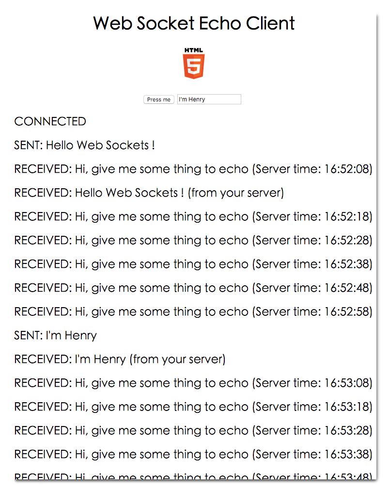
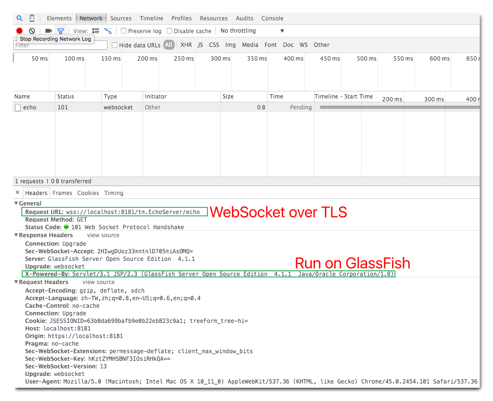
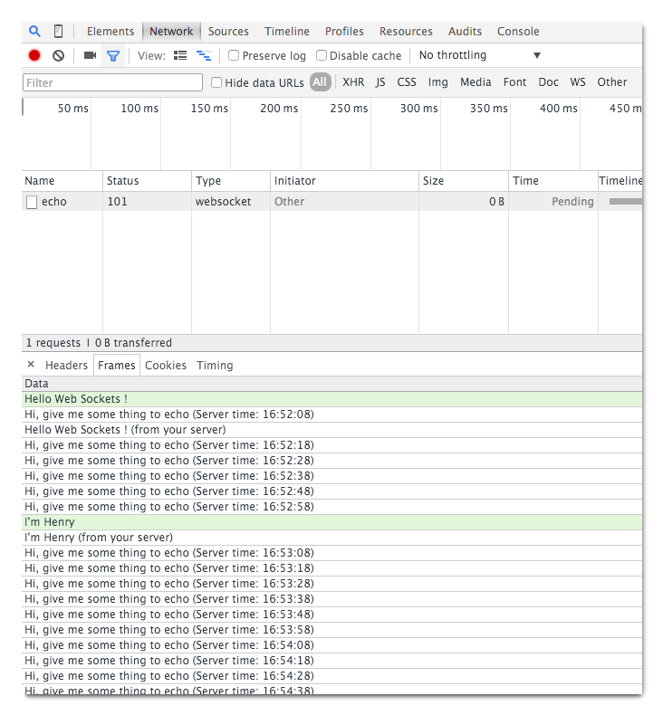
server-side
web.xml1
2
3
4
5
6
7
8
9
10
11
12
13
14
15<?xml version="1.0" encoding="UTF-8"?>
...
<security-constraint>
<web-resource-collection>
<web-resource-name>Protected resource</web-resource-name>
<url-pattern>/*</url-pattern>
<http-method>GET</http-method>
</web-resource-collection>
<!-- https -->
<user-data-constraint>
<transport-guarantee>CONFIDENTIAL</transport-guarantee>
</user-data-constraint>
</security-constraint>
</web-app>
EchoEndpoint.java1
2
3
4
5
6
7
8
9
10
11
12
13
14
15
16
17
18
19
20
21
22
23
24
25
26
27
28
29
30
31
32
33
34
35
36
37
38
39
40
41
42
43
44
45
46
47
48
49
50
51
52
53
54
55
56
57
58
59
60
61
62
63
64
65
66
67package tw.henry.websocket;
import java.io.IOException;
import java.time.LocalTime;
import java.time.format.DateTimeFormatter;
import java.util.Set;
import java.util.concurrent.Executors;
import java.util.concurrent.ScheduledExecutorService;
import java.util.concurrent.ScheduledFuture;
import java.util.concurrent.TimeUnit;
import java.util.logging.Level;
import java.util.logging.Logger;
import javax.websocket.OnClose;
import javax.websocket.OnMessage;
import javax.websocket.OnOpen;
import javax.websocket.Session;
import javax.websocket.server.ServerEndpoint;
@ServerEndpoint("/echo")
public class EchoEndpoint {
private static final Logger LOG = Logger.getLogger(EchoEndpoint.class.getName());
private static Set<Session> allSessions;
static ScheduledExecutorService timer =
Executors.newSingleThreadScheduledExecutor();
DateTimeFormatter timeFormatter =
DateTimeFormatter.ofPattern("HH:mm:ss");
ScheduledFuture<?> result;
@OnMessage
public String echo(String message) {
return message + " (from your server)";
}
@OnOpen
public void connectionOpened(Session session) {
LOG.log(Level.INFO, "WebSocket opened: "+session.getId());
allSessions = session.getOpenSessions();
if (allSessions.size()==1){
result = timer.scheduleAtFixedRate(
() -> sendTimeToAll(session),0,10,TimeUnit.SECONDS);
}
}
private void sendTimeToAll(Session session){
allSessions = session.getOpenSessions();
for (Session sess: allSessions){
try{
sess.getBasicRemote().sendText("Hi, give me some thing to echo (Server time: " +
LocalTime.now().format(timeFormatter)+")");
} catch (IOException ioe) {
System.out.println(ioe.getMessage());
}
}
}
@OnClose
public void connectionClosed() {
result.cancel(true);
LOG.log(Level.INFO, "connection closed");
}
}
client-side: Web
1 | <html> |
GlassFish-Eclipse development Env. setup
Environment
- JDK 8
- GlassFish 4 Java EE 7 Full Platform
- Eclipse (Mars Release) IDE for Java EE Developers
Setup Steps
enter Eclipse preferences
hotkey: cmd+,, preferences->Server->Runtime Environment->Add…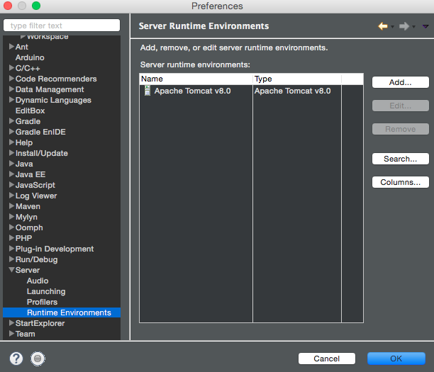
no glashfish environment runtime found, click
Download additional server adapters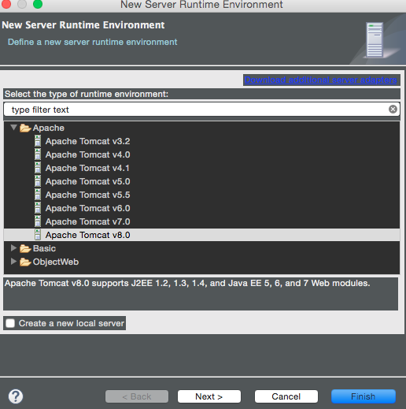
choose
GlassFish Tools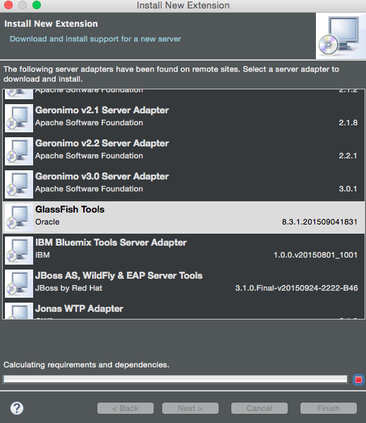
restart Eclipse after installaction completes
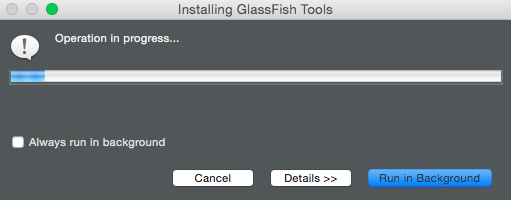
repeat step 1.~2., GlassFish runtime should appear, choose GlassFish 4
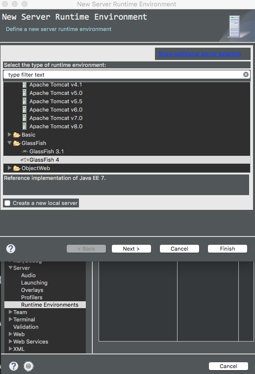
locate your glassfish4 path
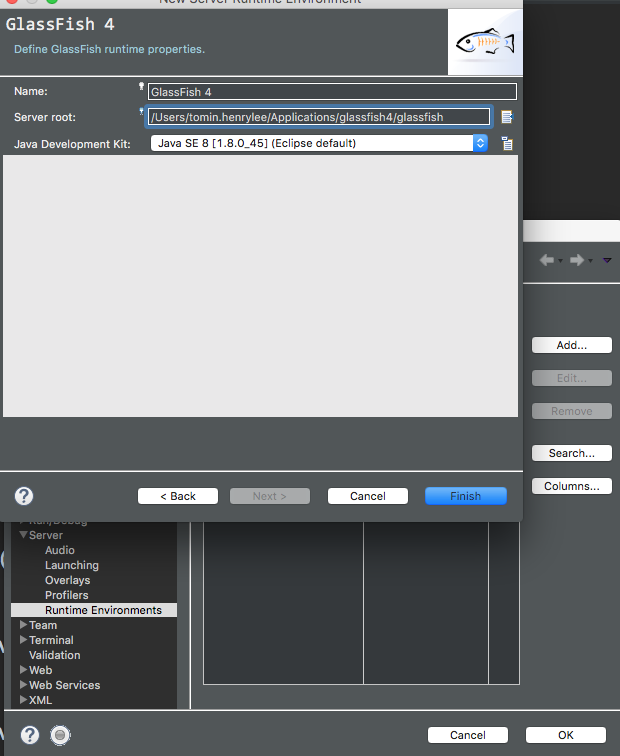
use Wizard to create GlassFish Server
hotkey: cmd+n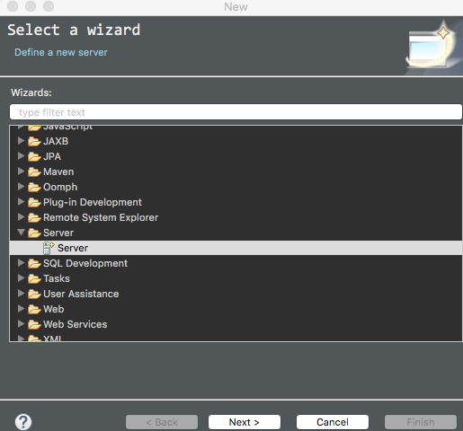
choose GlassFish 4
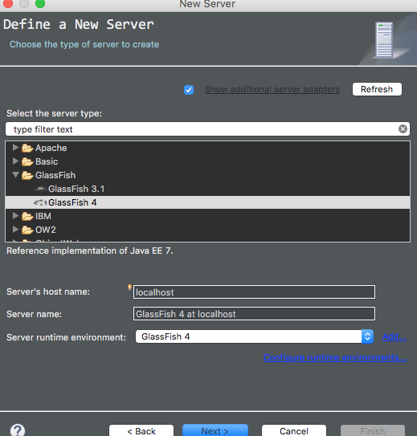
setup administrator name and password, finish setup
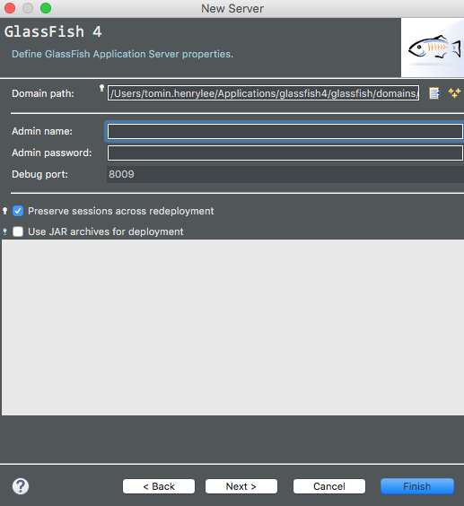
Start Server
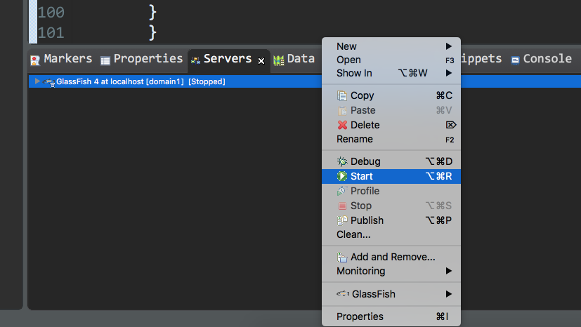
visit http://localhost:8080/ to see if GlassFish works properly.
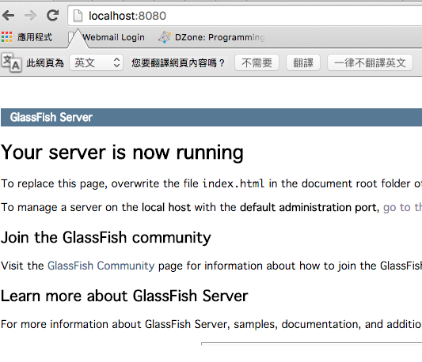
Refernces
Multiple JDK in Mac OSX 10.10 Yosemite
Eclipse Marketplace GlassFish Tools
Cloud Service (SaaS)
- http://framework.realtime.co/
- https://pusher.com/
- https://www.pubnub.com/
- https://ejabberd-saas.com/
- https://www.mulesoft.com/
Protocol
- STOMP: Simple (or Streaming) Text Oriented Messaging Protocol
- it’s not always straightforward to port code between brokers
- XMPP : Extensible Messaging and Presence Protocol
- AQMP : Advanced Message Queuing Protocol
- MQTT : Message Queue Telemery Transport
- Can be applied to IoT, such as connecting an Arduino device to a web service with MQTT.
- JMS : Java Message Service